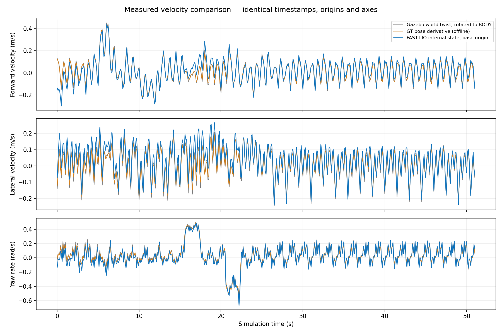

2026-10-27 · ROS 2 Humble · RUBI / domain 45
저속 전진·후진·좌우 회전의 속도 비교 완료. 이 결과는 DWB 입력으로 시험할 근거입니다. 실제 DWB 추종/급회전 개선은 아직 검증하지 않았습니다.
| 항목 | 결과 |
|---|---|
| 동일 timestamp로 맞춘 표본 | 511개 / 51.002 simulation seconds |
| 전진 속도 RMSE / 절대 오차 p95 | 0.0368 / 0.0708 m/s |
| Yaw 속도 RMSE / 절대 오차 p95 | 0.0317 / 0.0651 rad/s |
| 수신 시점 표본 나이 중앙값 / p95 | 0.100 / 0.102 s |
전진 +0.25m/s, 후진 −0.15m/s, 좌우 회전 ±0.4rad/s를 요청하고 각 구간 사이에 정지했습니다. /legged/cmd_raw를 사용해 기존 Collision Monitor와 watchdog을 거쳤으며, 시험 종료 시 0 명령을 반복 발행했습니다. 정책이 실제 소비한 명령도 함께 기록했습니다.

0 명령에서도 보행에 따른 몸체 속도 진동이 있습니다. 회색은 Gazebo twist, 주황은 GT pose의 오프라인 미분, 파랑은 FAST-LIO 내부 상태입니다. GT pose 미분은 검산용이며 controller 입력으로 사용하지 않습니다.
| 구간 | 표본 | vx RMSE (m/s) | yaw RMSE (rad/s) | GT 평균 vx | GT 평균 yaw |
|---|---|---|---|---|---|
| settle | 30 | 0.0294 | 0.0553 | 0.017 | 0.057 |
| forward | 20 | 0.0139 | 0.0538 | 0.214 | 0.007 |
| stop_forward | 30 | 0.0124 | 0.0350 | 0.027 | 0.017 |
| reverse | 25 | 0.0082 | 0.0288 | -0.115 | 0.018 |
| stop_reverse | 30 | 0.0083 | 0.0266 | 0.022 | 0.027 |
| left | 20 | 0.0580 | 0.0384 | -0.016 | 0.408 |
| stop_left | 30 | 0.0693 | 0.0251 | 0.011 | 0.035 |
| right | 20 | 0.0270 | 0.0269 | 0.033 | -0.358 |
| stop_right | 30 | 0.0094 | 0.0245 | 0.001 | 0.012 |
Gazebo p3d의 world 축 선/각속도를 BODY 축으로 회전했습니다. FAST-LIO state.vel은 camera_init 축에서 body 축으로 회전하고, body→base_link TF의 원점 차이는 ω×offset으로 보정했습니다. 두 스트림을 message timestamp로 정렬하고 GT는 보간했습니다. BODY와 base_link는 현재 모델에서 동일 원점입니다. GT pose는 ±0.10초 회귀 미분으로 독립 검산했습니다.
FAST-LIO probe는 기존 localization과 같은 원시 센서를 사용하되 출력/TF를 /velocity_probe 아래로 분리했습니다. 기존 DWB 입력은 이 시험 동안 변경하지 않았습니다.
10Hz /clock에서 nominal 20Hz ROS timer가 사실상 scan당 한 번만 깨어나면서, 콜백당 한 scan 처리 시 초기 대기열이 계속 남았습니다. 콜백당 최대 4개를 FIFO로 처리하고, 추가 scan 시작 전 20ms 예산을 검사하도록 바꿨습니다. timestamp 조작이나 scan 삭제는 없습니다. 첫 scan 자체가 20ms를 넘으면 그 시간까지 강제로 중단하지는 않습니다. 기본 코드값은 1개, mid360 profile은 4개입니다.
별도 probe 기록에서 표본 나이 중앙값은 0.500→0.100초, p95는 0.502→0.102초였습니다. 서로 다른 실행이므로 RMSE 변화 전체를 이 수정의 효과로 단정하지 않습니다.
FAST-LIO state.vel + gyro − bias → /fastlio/odometry_velocity (body origin/axes) → rigid origin/axis transform → /legged/controller_odom (base_link) → DWB
기존 /Odometry의 zero twist는 보존했습니다. 새 입력은 fastlio_velocity:=true일 때만 연결됩니다. 위치 수치미분 및 별도 시간창 평활화는 사용하지 않습니다. frame 누락, 오래된 입력, 비유한 값은 버립니다. covariance는 모델 근사치이며 실측 정확도 보장이 아닙니다.
FAST-LIO C++ 테스트, trial Python 테스트, 격리 ROS domain의 원점/축 변환·timestamp 보존·stale/nonfinite 입력 차단 및 launch 조합 검사가 통과했습니다. 0.7m/s 급회전, 좁은 통로 완주, Orin NX 부하는 미검증입니다. 선속도 y의 약 0.029m/s bias 및 보행 진동이 DWB 예측에 미치는 영향도 다음 주행에서 확인해야 합니다.
시험 완료 후 19:13:50에 gzserver가 libros2_livox.so에서 segmentation fault로 종료됐습니다. launch도 exit code −11을 기록했습니다. 충돌 ELF 주소 0x40cf0은 오후에 분석한 scan index 오류 위치와 같습니다. 이 Gazebo는 15:09에 시작했고, 기존 index 수정본은 15:15에 설치돼 이전 메모리 매핑을 계속 썼습니다. 커널의 “(deleted)” 표시도 교체 전 라이브러리 매핑과 일치합니다. 이번 core는 확보하지 못했으므로 원인을 독립적으로 완전히 확증한 것은 아닙니다.
시뮬레이터를 종료하는 명령은 보내지 않았습니다. localization과 navigation은 새 속도 출력을 연결하려고 이후 종료했으며, 아직 재시작하지 않았습니다. 모든 시험용 명령/관측 probe는 종료됐습니다. 시뮬레이터를 다시 시작하면 설치된 index 수정본을 읽을 수 있습니다. GUI World Reset만으로는 플러그인이 바뀌지 않습니다.
시뮬레이터 및 새 FAST-LIO localization이 실행되고 map TF가 정상인 것을 확인한 뒤 navigation을 다음 옵션으로 시작합니다. 새 localization에는 초기 위치 정합이 필요합니다. MPPI는 추가하지 않았습니다.
source /home/kim/legged_robot_ws/install/local_setup.bash ros2 launch legged_range_trial navigate.launch.py \ site:=/home/kim/legged_robot_ws/maps/cost_wall_lower10_v3/site.yaml \ use_sim_time:=true cloud_topic:=/livox/lidar_PointCloud2 \ controller:=dwb fastlio_velocity:=true estimate_velocity:=false
비교 원복: fastlio_velocity:=false estimate_velocity:=false. DWB 속도/critic 계수는 이번에 변경하지 않았습니다. 먼저 정상 속도 입력만 바꾸고, 같은 경로에서 추종 오차· 코너 진입 속도·정지 빈도를 비교해야 합니다.